ZONA EPIPELÁGICA (0m - 200m)
Zona Fótica o Luminosa. Es la única capa del océano donde penetra suficiente luz solar para realizar la fotosíntesis. Alberga más del 90% de toda la vida marina conocida.
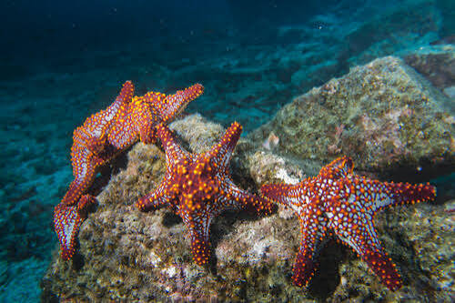
Estrella de Mar (Starfish)
Asteroidea¡Increíble regeneración de extremidades!
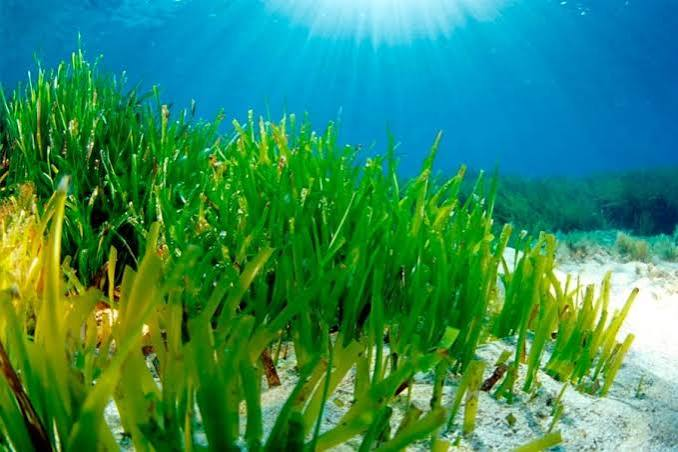
Praderas de Algas (Neptune Grass)
Posidonia oceanica¡Súper productores de oxígeno del planeta!
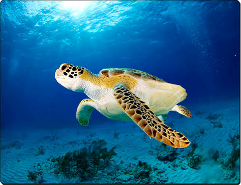
Tortuga Marina (Green Sea Turtle)
Chelonia mydas¡Navegante biológica ancestral!
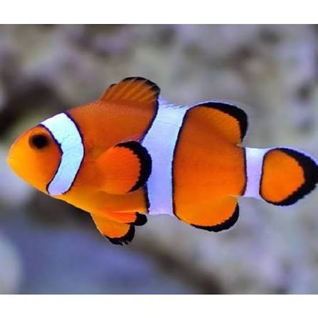
Pez Payaso (Clown Anemonefish)
Amphiprion ocellaris¡Simbiosis mutualista perfecta!
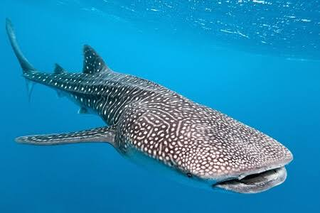
Tiburón Ballena (Whale Shark)
Rhincodon typus¡El pez gigante más grande del mundo!
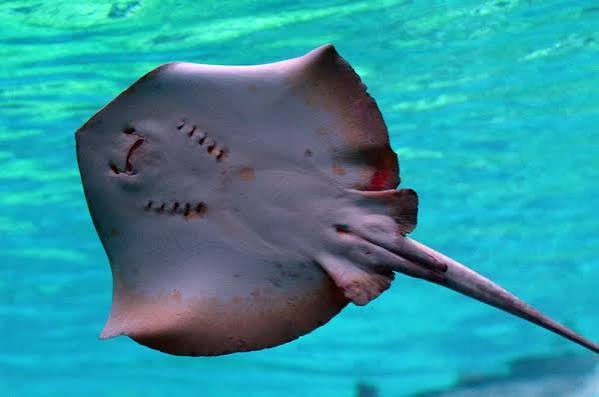
Manta Raya (Manta Ray)
Mobula alfredi¡Gigantes voladores de las profundidades!
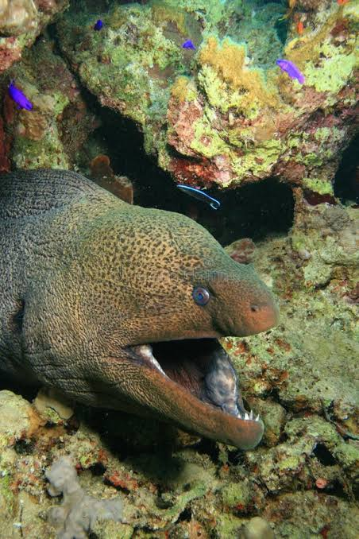
Morena Pintada (Moray Eel)
Gymnothorax pictus¡Depredador críptico de arrecifes!
ZONA MESOPELÁGICA (200m - 1000m)
Zona Crepuscular o Penumbra. La luz solar disminuye rápidamente y la fotosíntesis ya no es posible. Aquí se encuentra la Capa de Mínimo Oxígeno y habitan criaturas con adaptaciones oculares extremas.
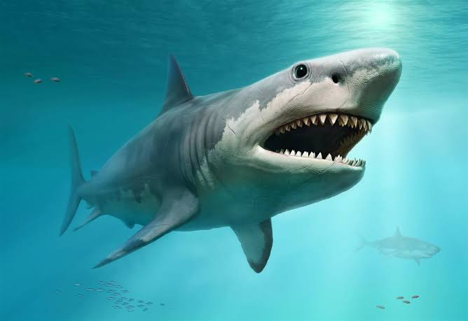
Tiburón Blanco (Great White Shark)
Carcharodon carcharias¡Súper depredador electroreceptor!
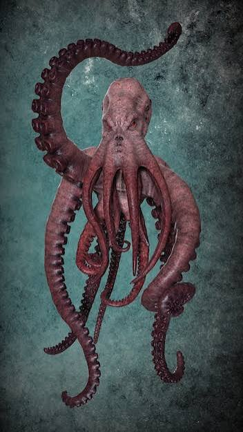
Pulpo Gigante (Giant Pacific Octopus)
Enteroctopus dofleini¡Ocho hemisferios de inteligencia!
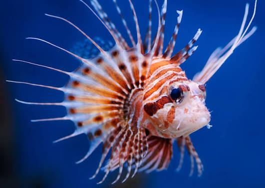
Pez León (Red Lionfish)
Pterois volitans¡Espinas venenosas flotantes altamente defensivas!
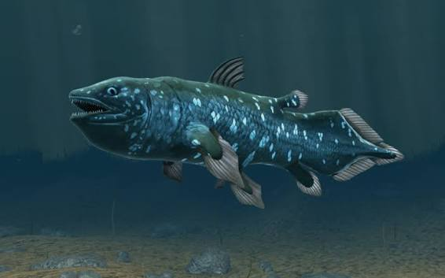
Celacanto (Coelacanth)
Latimeria chalumnae¡El fósil viviente lobulado de la prehistoria!
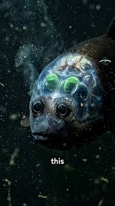
Pez Ojo de Barril (Barreleye Fish)
Macropinna microstoma¡Cráneo lleno de fluido totalmente transparente!
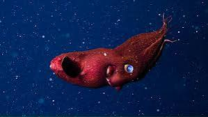
Calamar Vampiro (Vampire Squid)
Vampyroteuthis infernalis¡Fascinante reliquia ecológica del abismo!
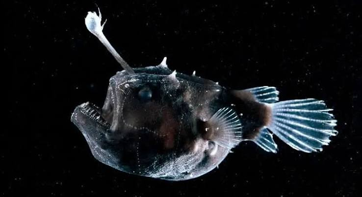
Pez Linterna (Lanternfish)
Symbolophorus barnardi¡Responsable de la mayor migración vertical del planeta!
ZONA DE MEDIANOCHE (1000m - 2200m+)
Zona Batipelágica o Medianoche. La oscuridad es total y absoluta. La presión aplastante supera las 100 atmósferas y el agua se sitúa cerca del punto de congelación (4°C). Aquí impera la quimiosíntesis y la bioluminiscencia.
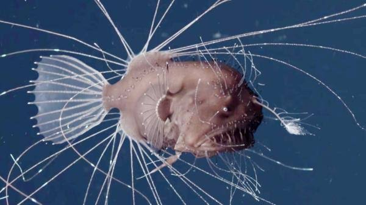
Pez Abisal (Humpback Anglerfish)
Melanocetus johnsonii¡Señuelo simbiótico bioluminiscente!
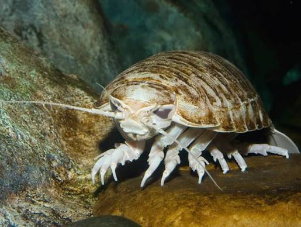
Isópodo Gigante (Giant Isopod)
Bathynomus giganteus¡Carroñero de metabolismo extremadamente lento!
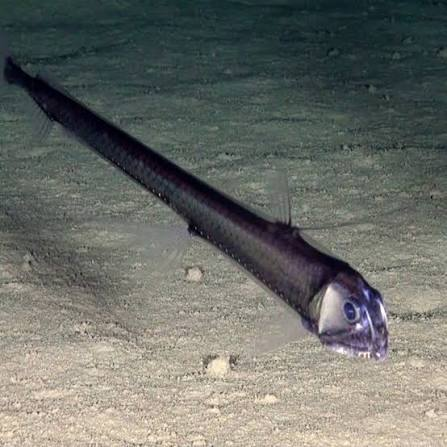
Pez Víbora (Viperfish)
Chauliodus sloani¡Dientes transparentes hiper-desarrollados!
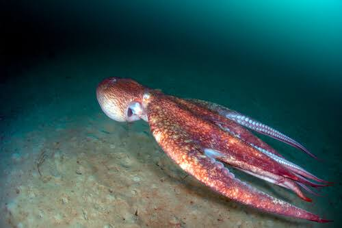
Calamar Gigante (Giant Squid)
Architeuthis dux¡Soberano indiscutible de las llanuras abisales!
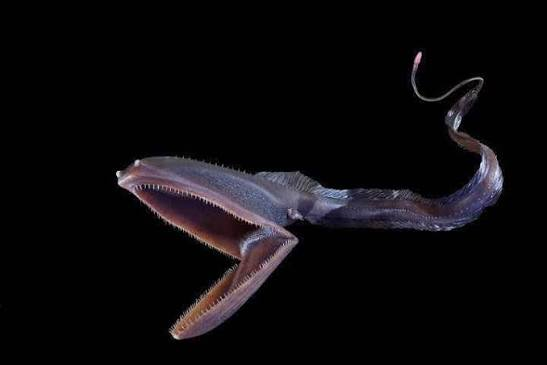
Pez Pelícano (Gulper Eel)
Eurypharynx pelecanoides¡Fauces expansibles capaces de tragar presas colosales!
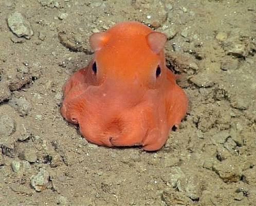
Pulpo Dumbo (Dumbo Octopus)
Grimpoteuthis bathynectes¡Aletas cefálicas en forma de orejas natatorias!
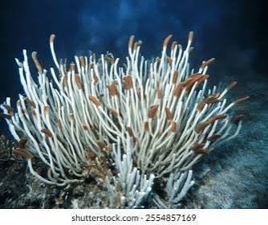
Gusanos de Tubo (Giant Tube Worms)
Riftia pachyptila¡Sobreviven mediante quimiosíntesis sulfurosa volcánica!
MISIÓN DE INMERSIÓN COMPLETADA
Felicidades, María Antonieta. El análisis de telemetría indica que has descendido hasta los 2,200 metros bajo el nivel del mar con el soporte técnico del Tío Manchas. Has documentado con éxito adaptaciones físicas extremas de barofilia, quimiosíntesis microbiana e inmunidad térmica en la Fosa de las Marianas. Tu bitácora de datos oceanográficos está lista para su publicación científica.